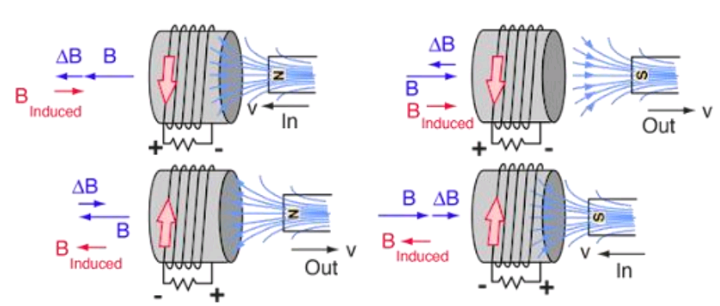

transistor
uses of electromagnet
electric motor
electric magnet
wound a loopwire round a metal like iron.
let the wire be close to each other
connect the two end of the wire to a battery terminal to power it.
bring an iron close to the wound iron.
the wound iron will attract the other iron.
the more the turns of the wire on the iron the stronger it attract iron.
the more the volts of the battery the more it attract iron.
electromagnetic induction
this is the process of creating small current by taking a magnet close
to the iron of the coil wire at the ends of the wound wire the will be small current
to keep this current flowing you must take the magnet away and bring it close again and again.

transformers
 the primary coil is the input that will be connected to the battery.
the secondary coil is the output that will be connected to the load.
if the primary coil turns is more than the secondary coil
this is a step up transformer else it's a step down transformer.
the primary coil is the input that will be connected to the battery.
the secondary coil is the output that will be connected to the load.
if the primary coil turns is more than the secondary coil
this is a step up transformer else it's a step down transformer.
induction heat
this when an alternating current with high oscillation pass through a coil
and a metal that get attracted to magnet is taking into the coil. the metal is
observe to be very hot due to Eddy current.